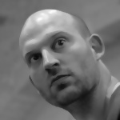

La conférence des professionnels du web pour apprendre et perfectionner son art.
C'est complet ! Si vous souhaitez vous joindre à nous, il reste encore quelques places pour la soirée.
La conférence des professionnels du web pour apprendre et perfectionner son art.
C'est complet ! Si vous souhaitez vous joindre à nous, il reste encore quelques places pour la soirée.




Les conférences et ateliers affichent complet. Il reste encore quelques places pour la soirée.
Les avis sont unanimes : Sud Web ça fait du bien !
Et c'est vous qui le clamez. La preuve avec les vidéos et les photos des éditions précédentes.
Un nombre impressionnant de rencontres, de talks tous aussi passionnants les uns que les autres — La Ferme du Web
Je n’avais jamais eu autant de retours suite à une intervention — David Larlet
Les partages, les échanges, font la grande richesse de l’événement. De ce point de vue là, Sud Web est toujours un sans faute. — Ekino
Avec le temps, SudWeb devient un outil de travail, une sorte de loupe qui revient tous les ans. — X-Prime
À travers une organisation impeccable, Sudweb apporte une vision humaine, au delà des questions techniques — Alter Way
Ce qui fait la qualité de cet événement : des échanges faciles et humains entre les orateurs, les participants, les organisateurs — Clever Age
Rencontrer des personnes que nous lisons quotidiennement, que ce soit de par leurs blogs, leur compte Twitter — Simon
Une journée de conférences plénières.
Des partages d'expérience pour sortir de sa zone de confort et apprendre sans se prendre la tête.
Une journée de pratique et d'expérimentations.
Nous construisons et faisons la journée ensemble : jeux, code et dessins où tout le monde apprend et partage ses connaissances.
Deux soirées pour faire connaissance et renforcer les liens.
Un excellent moyen pour faire connaissance avec les orateurs et les participants dans une ambiance convivialle et informelle.

Sud Web 2014 se déroulera en plein cœur de Toulouse.
Le vendredi, les conférences auront lieu aux Espaces Vanel; un lieu offrant une vue imprenable sur la ville. Nous y resterons également pour la soirée communautaire.
Le samedi, les élaboratoires se déroulent à l'école d'informatique EPITECH.
Crédit photo : wcc2013